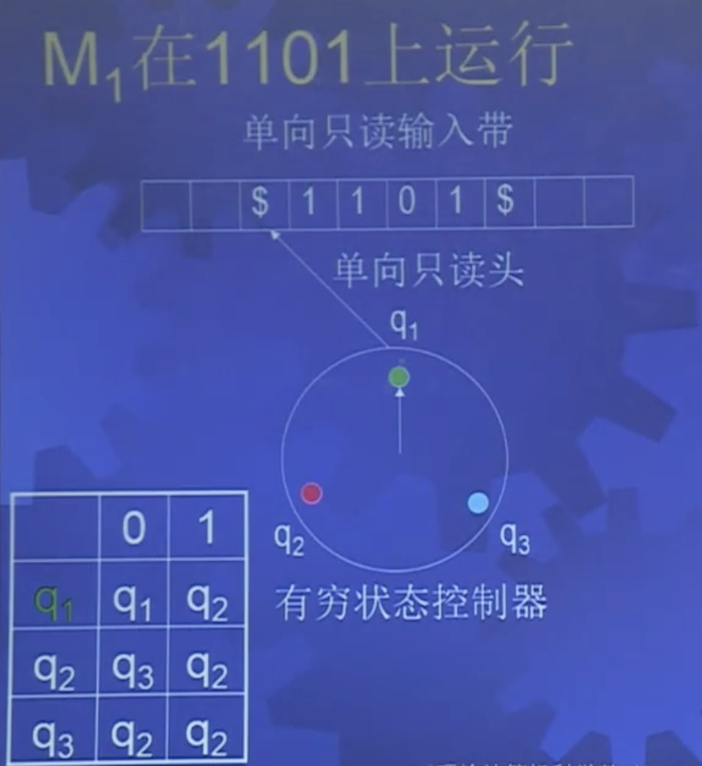
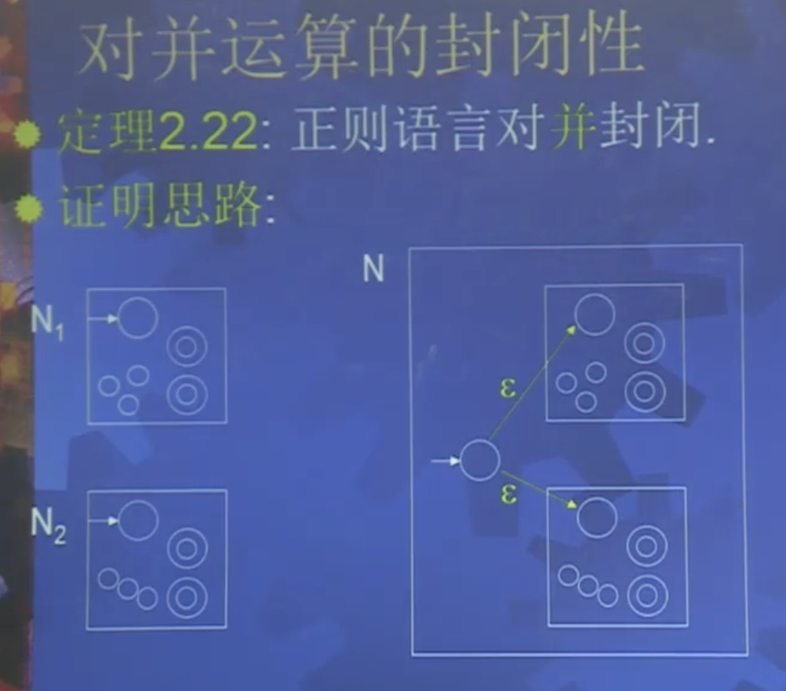
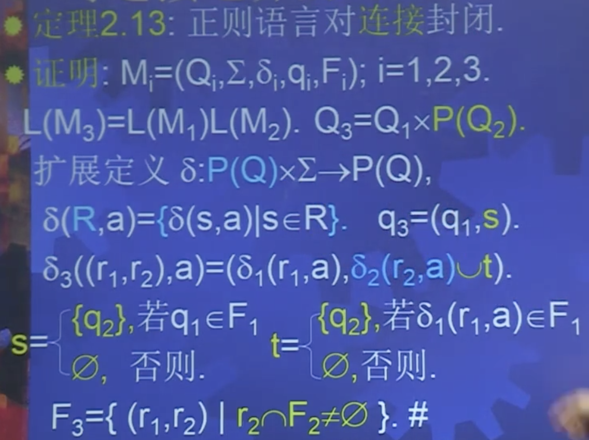
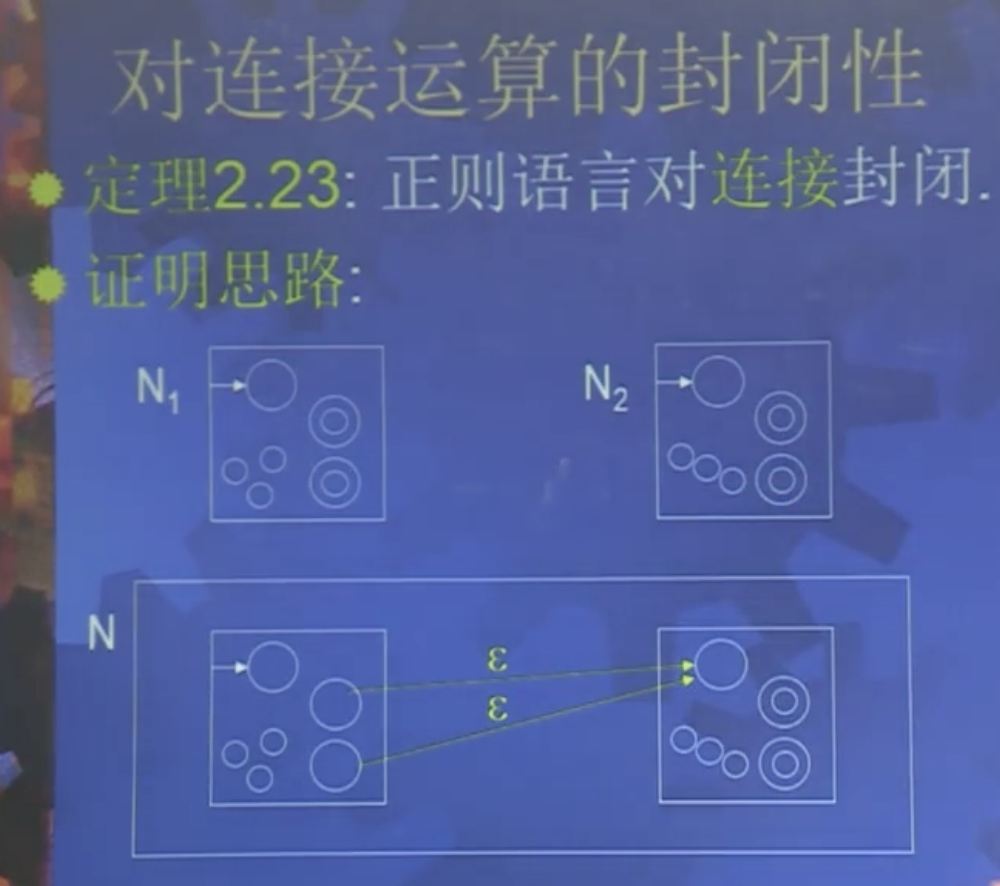
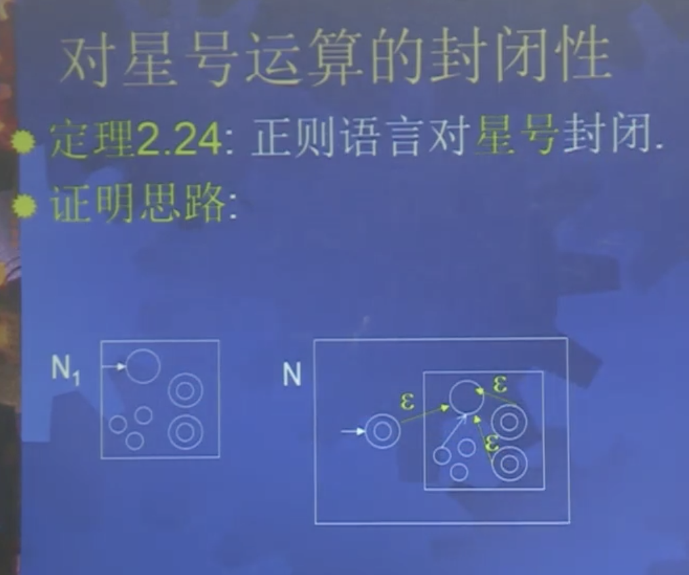
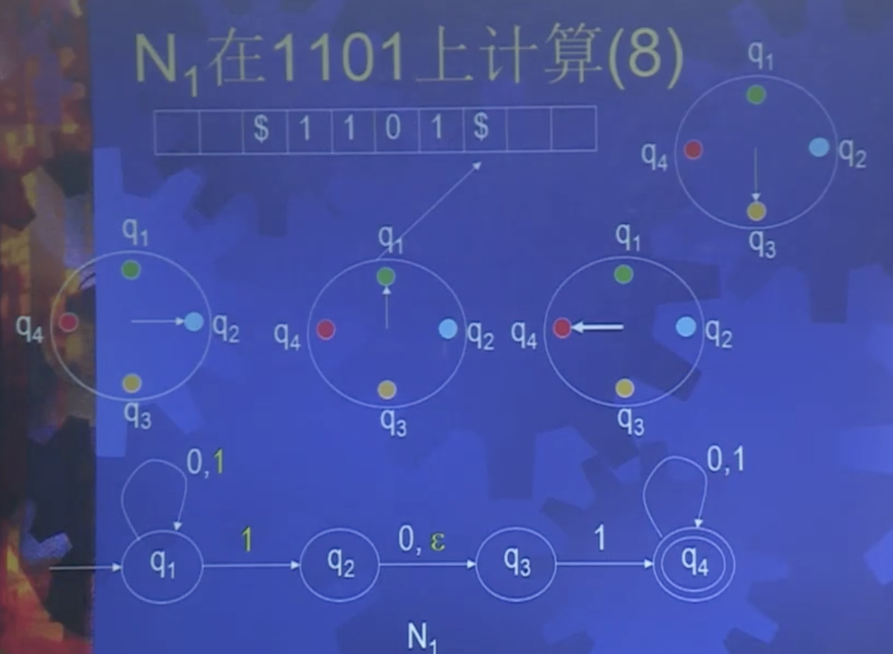

确定性有穷自动机
定义2.1：确定性有穷自动机
M=(Q,Σ,δ,q0,F)
其中：
- Q：有穷状态集
- Σ: 输入字母表
- δ:Q×Σ→Q: 转移函数
扩展的转移函数：δ:Q×Σ∗→Q
- q0∈Q: 初始状态
- F⊆Q: 接受状态
- L(M)={w∈Σ∗∣δ(q0,w)∈F} 为正则语言

正则运算
设 A，B 为两个语言，正则运算为：
- 并 A∪B
- 连接 AB
- 星号 A∗
定理：正则语言对正则运算封闭
定理：正则语言对补运算封闭
思路：证明补运算产生的语言和原来的语言互补
证明：设正则语言L=L(M),
M=(Q,Σ,δ,q0,F)，令F′=Q−F.
M′=(Q,Σ,δ,q0,F′).
∀x,x∈L(M)⇔δ(q0,x)∈F⇔δ(q0,x)∉F′⇔x∉L(M′)(证明互补)
所以 L(M′)=Σ∗−L(M)=L(M)c
定理2.12：正则语言对并运算封闭
思路：让两个自动机同时运行只要一个接受就接受
证明：设正则语言Li=L(Mi),
M=(Qi,Σi,δi,qi,Fi),i=1,2.
Q3=Q1×Q2;q3=(q1,q2);
δ3((r1,r2),a)=(δ1(r1,a),δ2(r2,a))
F3=(F1×Q2)∪(Q1×F2).(F为接受状态，只要一个Fi接受即可)
M3=(Q3,Σ3,δ3,q3,F3).
L1∪L2=L(M1)∪L(M2)=L(M3)
NFA证明：设 NFA Ni=(Qi,Σ,δi,qi,Fi) 识别 Ai,i=1,2 构造 NFA N 识别 A1∪A2
Q=Q1∪Q2∪{q0}
F=F1∪F2
δ(q,a)=⎩⎪⎪⎨⎪⎪⎧δ1(q,a)δ2(q,a){q1,q2}∅q∈Q1q∈Q2q=q0∧a=ϵq=q0∧a≠ϵ

定理：正则语言对交运算封闭
思路：1. 布尔运算(交并补)转为之前的问题。 2. 让两个自动机同时运行只要都接受就接受
证明：设正则语言Li=L(Mi),
M=(Qi,Σi,δi,qi,Fi),i=1,2.
Q3=Q1×Q2;q3=(q1,q2);
δ3((r1,r2),a)=(δ1(r1,a),δ2(r2,a))
F3=F1×F2.(F为接受状态，两个Fi都接受)
M3=(Q3,Σ3,δ3,q3,F3).
L1∩L2=L(M1)∩L(M2)=L(M3)
推论：正则语言对布尔运算、差、对称差封闭
定理2.13：正则语言对连接运算封闭
思路：对于两个自动机 A 和 B，一直运行 A 直到所有串输入，过程中，当 A出现接受状态时，同步启动一个 B 运行，最终根据是否有 B 达到接受状态决定是否接受输入串。
证明：略。

NFA证明：
Q=Q1∪Q2
δ(q,a)=⎩⎪⎪⎨⎪⎪⎧δ1(q,a)δ1(q,a)δ1(q,a)∪{q2}δ2(q,a)q∈Q1,a∉F1q∈F1,a≠ϵq∈F1,a=ϵq∈Q2

定理2.24：正则语言对星号运算封闭
思路：类似于定理2.13，初始状态集{q0}，当第一个自动机出现接受状态 qf 时，启动第二个自动机，并从当前输入开始运行所有自动机，状态集为 {qf,q0} 当两个自动机中任一个出现接受状态则启动一个新的自动机，并从当前输入开始继续运行所有自动机 ( 例如，{qx,qf,q0} )，最终根据自动机状态集合中是否出现接受状态而接受。
NFA证明：
Q=Q1∪{q0}
F=F1∪{q0}
δ(q,a)=⎩⎪⎪⎪⎪⎨⎪⎪⎪⎪⎧δ1(q,a)δ1(q,a)δ1(q,a)∪{q1}{q1}∅q∈Q1,a∉F1q∈F1,a≠ϵq∈F1,a=ϵq=q0,a=ϵq=q0,a≠ϵ

非确定性有穷自动机
特点：下一个状态可以不唯一确定：
- ϵ 移动或每一步有多个选择，产生不同的备份
- 无法移动备份消失
- 一个备份接受则接受
- 自动机描述简单，减少状态数，分析麻烦

NFA 与 DFA 的等价性
ϵ 闭包：每个状态子集合，经 ϵ 移动可以达到的新状态子集合。
定理2.19：每台 NFA 都有等价 DFA
思路：给定NFA，构造 DFA 记住 NFA 的所有分支，设有 k 个状态则有 2k 个不同状态子集合。
证明：设 NFA N=(Q,Σ,δ,q0,F)，
构造 DFA M(Q′,Σ,δ′,q0′,F′)，L(M)=L(N)
- Q′=P(Q)，原来状态的幂集
- δ′(R,a)=⋃r∈RE(δ(r,a)), E 为 ϵ 闭包，从一个ϵ闭包转移到另一个ϵ闭包
- q0′=E({q0})
- F′={R∈Q′∣R∩F≠∅}
推论2.20：一个语言是正则的，当且仅当有一台 NFA 识别它。
正则表达式
引理2.29：正则表达式描述正则语言
证明：先验证小的正则表达式可以用 NFA 表示，再使用正则运算进行归纳。
引理2.32：正则语言可以用正则表达式描述
思路：
- GNFA：箭头标号是正则表达式
- 从 DFA 构造等价的 GNFA
- 从 GNFA 构造等价的正则表达式
证明：
- 设正则语言 A 被 DFA M 识别
- 把 M 转换成等价的 GNFA G
- 把 G 转换成等价的正则表达式
非正则语言
定理2.37(泵引理)：设 A 是正则语言，则存在常数 p (泵长度)，使得若 s∈A，且 ∣s∣≥p，则 s=xyz，且满足下述条件：
- 任给的 i≥0,xyiz∈A
- ∣y∣>0
- ∣xy∣≤p
证明：p 为确定性有穷自动机的状态数，长度大于等于 p 的串至少经过 p+1 个状态。
使用方式：
- 假设 B 是正则的，设 p 是泵长度
- 取 s∈B,∣s∣≥p
- 根据泵引理，s=xyz
- 任给的 i≥0,xyiz∈A
- ∣y∣>0
- ∣xy∣≤p
- 证明存在 i≥0，使得xyiz∈B，矛盾。